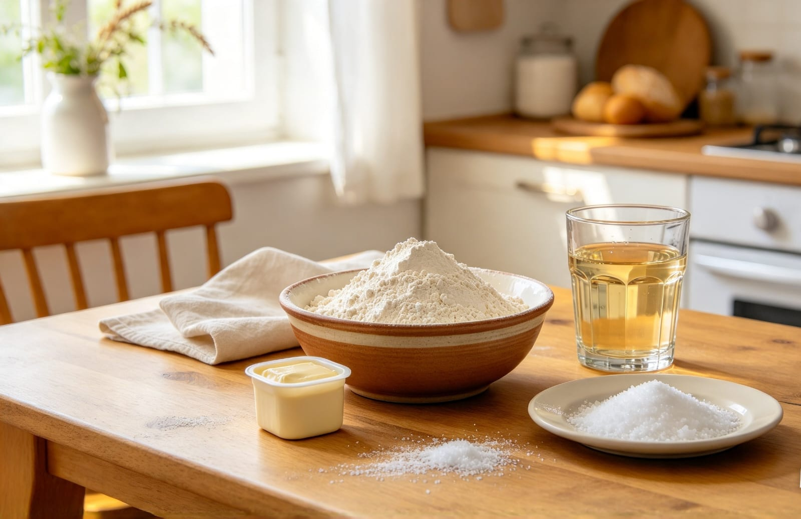
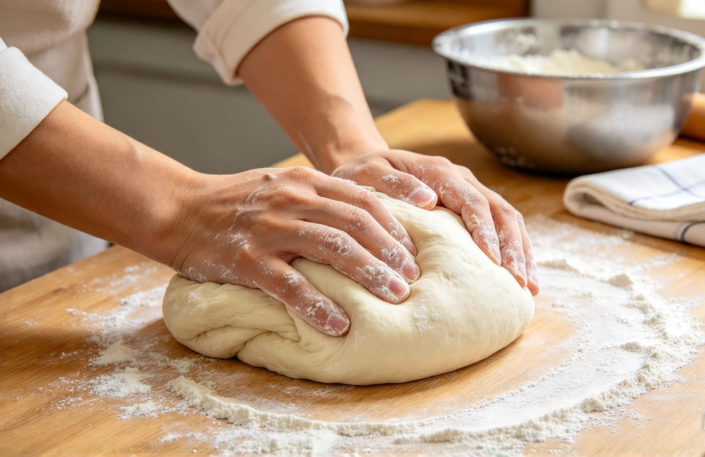
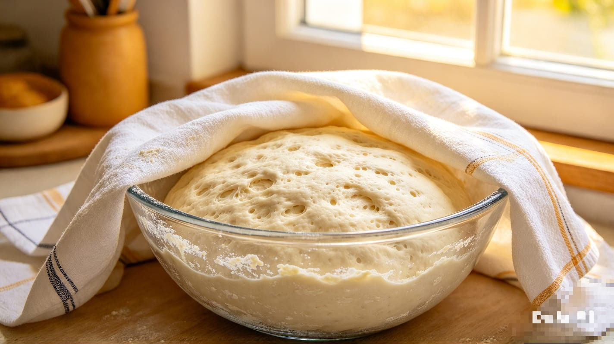
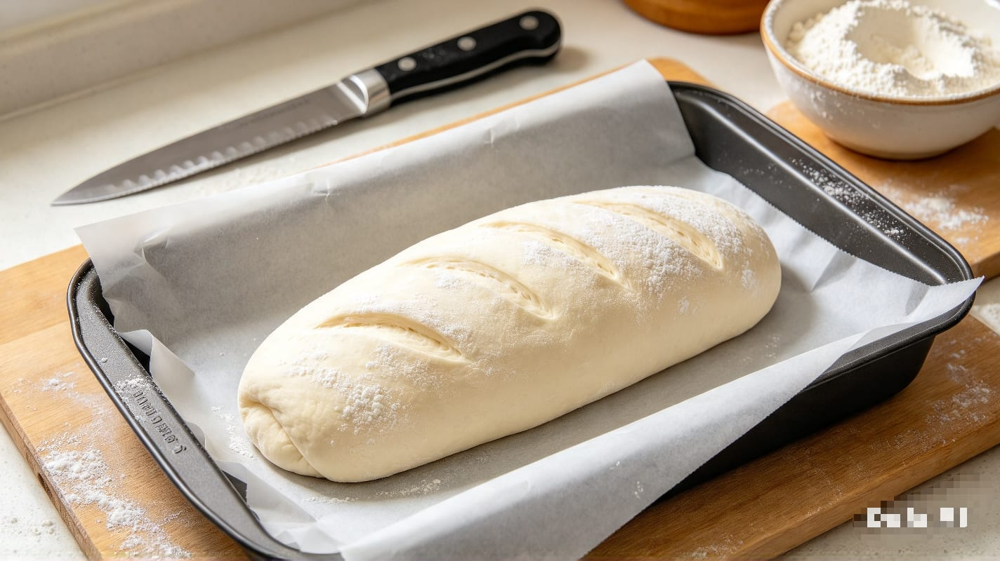
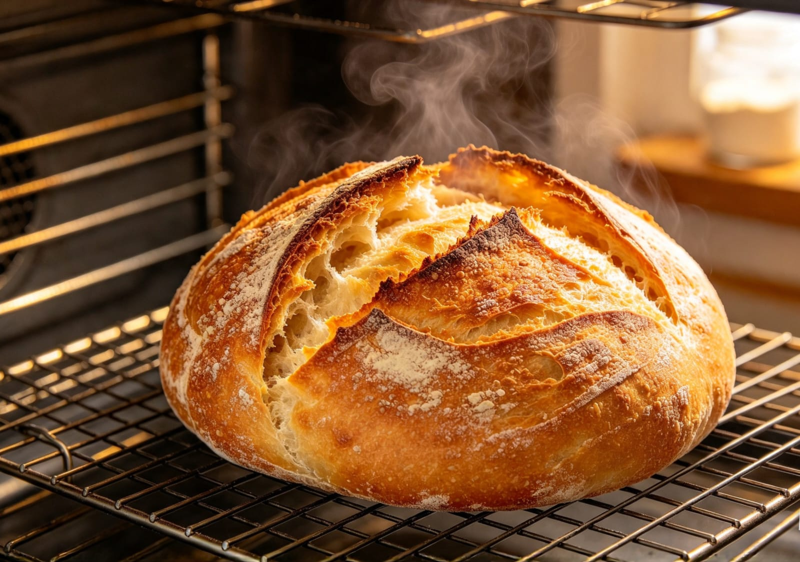

Un tutorial paso a paso para preparar pan delicioso desde tu cocina
Hacer pan es una de las actividades más gratificantes que puedes aprender. Con pocos ingredientes y mucha paciencia, podrás disfrutar de pan recién horneado en tu hogar.

Para hacer un pan sencillo necesitas harina de trigo, agua, levadura y sal. La harina aporta la estructura, el agua activa la levadura, la levadura hace crecer el pan y la sal mejora el sabor.

Disuelve la levadura en agua tibia, mezcla con la harina y la sal. Amasa durante 10 a 15 minutos hasta que la masa quede suave y elástica.

Deja reposar la masa en un lugar cálido hasta que duplique su tamaño. Esto toma entre 1 y 2 horas.

Saca el aire de la masa, dale la forma que prefieras y deja descansar unos 30 a 45 minutos antes de hornear.

Hornea a 180°C-200°C durante 30 a 40 minutos hasta que esté bien dorado. ¡Deja enfriar y disfruta tu pan!